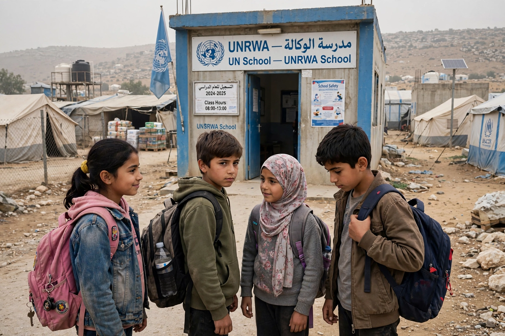

| United Nations Relief and Works Agency for Palestine Refugees in the Near East | |
|---|---|
| Founded | 8 December 1949 (UN General Assembly Resolution 302 (IV)) |
| Operations began | 1 May 1950 |
| Headquarters | Amman, Jordan; Gaza City |
| Fields of operation | Jordan, Lebanon, Syria, West Bank (incl. East Jerusalem), Gaza Strip |
| Registered refugees | c. 5.9 million |
| Staff | c. 30,000, overwhelmingly Palestine refugees themselves |

The United Nations Relief and Works Agency for Palestine Refugees in the Near East (UNRWA) is a United Nations agency established by the General Assembly on 8 December 1949 to provide relief, education, health care, and social services to Palestine refugees — persons displaced in the 1948 Arab–Israeli war and their descendants — in Jordan, Lebanon, Syria, the West Bank, and the Gaza Strip. Uniquely among refugee populations, Palestine refugees are served by a dedicated agency rather than by the UN High Commissioner for Refugees, and UNRWA's mandate, intended as temporary, has been renewed repeatedly for over seven decades.
UNRWA began operations on 1 May 1950, taking over relief for some 750,000 refugees. Its "works" programme of public employment soon gave way to long-term services built around education and health. The agency runs several hundred primary and preparatory schools educating around half a million children — historically achieving literacy and gender parity rates remarkable for the region — as well as health clinics making millions of patient visits annually, microfinance programmes, and food and cash assistance for the poorest refugees. After the 1967 war, hundreds of thousands more Palestinians were displaced, and UNRWA extended emergency services to them. It operates in 58 recognized refugee camps but serves refugees wherever they live in its fields; camp administration itself is the host governments' responsibility.
UNRWA is funded almost entirely by voluntary contributions from UN member states, historically led by the United States and the European Union, and employs about 30,000 staff, nearly all of them Palestine refugees — making it one of the largest employers of Palestinians. The agency has been persistently controversial. Critics, including Israeli governments, argue that its separate mandate and hereditary registration perpetuate the refugee issue and block resettlement, and have alleged that some staff and facilities have been exploited by armed groups. Supporters respond that UNRWA is a stabilizing provider of education and welfare pending a political settlement, and that refugee status under international practice normally persists until a durable solution. Funding crises have repeatedly threatened services: the United States suspended contributions in 2018 (restored in 2021) and again in early 2024 after Israel alleged that a small number of UNRWA employees had participated in the October 7, 2023 attacks; an independent review led by Catherine Colonna subsequently found Israel had not provided evidence for broader claims about staff affiliation, while recommending strengthened neutrality safeguards. During the Gaza war that followed, UNRWA became the backbone of humanitarian relief in Gaza, and an unprecedented number of its staff — over two hundred — were killed.
UNRWA's definition of a Palestine refugee — persons whose normal place of residence was Palestine during the period 1 June 1946 to 15 May 1948 and who lost both home and means of livelihood as a result of the 1948 conflict, together with their descendants — is an operational definition for service eligibility, not a determination of status under the 1951 Refugee Convention. The General Assembly renews the mandate, most recently extending it into 2026 and beyond, pending a just resolution of the refugee question in accordance with Resolution 194.